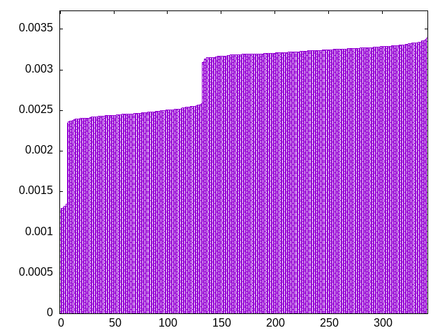
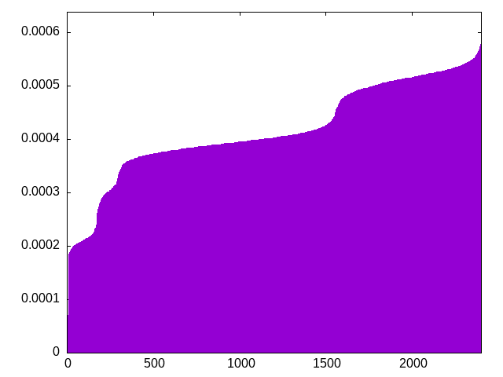
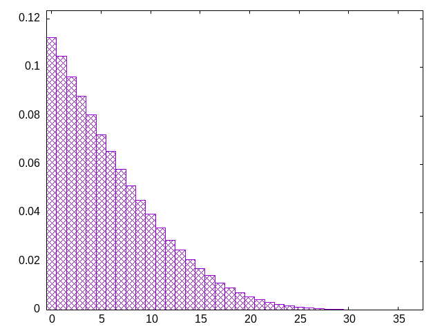

start with a fixed sequence, and shift the pieces randomly
itlsslljjjizzsitojljooiostzttzlozzosiijtljjsssolztiltsozziojltsttilzljijoiiljiszzlijzjttosjsojzlssooljtztosotzliziijostljllszootisjiiitsjltzolzlozszoojllitstzjsitojsjitttijilizszsoztllijoszjoijstsolljzozijtlsjtsolltiziljozjtozsoiozotjztilltszosstzisizijljjiszlzlijstlttsoljlozisoostjlisosjlzziztltojotijttsisolsotiotsijzloizlljzjlzsjiijzsittloosijzotzjlsottioiszjojtlllozjositslizjljzszttizjljistzlsotzosjltiliozzstoltijisjtssjololizozjojzsztiolsiltljizsjizostitsoojtlzzjitosjstsitjooljlzltsoiizizjsizollsijjzttlljostisozzsltjoiltizsosilooloiztjtsljtjjtlozzozszizjsotsltjiljjtizoszsoiiiltltjsojiizlzsltsszolosjltstlijjtotizilitjlsjozojojjizsooizlztozlitossstijllzjzttssizlsizilziojlozttojltjljssiilsozzoisittjottojsltjiolzljziosljsijzzotjizlsstoilosoztjlslojzstztitjozisltltozjjzisisltjtlooiistjjlzolojzsizlijsosizootztzltzlltojjisijtltsojziizsitlzjtijljsojtsozozllsiosjsolloittztjzsizzlooitlzjjtlsossiljszltijtsoiooitloiltzzjtisjjtijszilojzszioilzjzstltsloziljossloijtioojltjoijzszttslsojizzstollszt
bagginess: 0.0130
bagginess6: 0.2216
distribution1_maxgap: 1.000000000001e-06
distribution2_maxgap: 0.004842004842004841
distribution3_maxgap: 0.00105500211000422
distribution4_maxgap: 0.00010300030900092701
diversity: 4.9
entropy: 11.553
evenness_diff: 5.434
evenness_same: 4.636
maxdrought: 34.4
maxflood: 5
peakdrought: 0.0
repchance: 0.1119
seq4_coverage: 1.0000
seq4_follow: 6.417
distribution3_graph:

distribution4_graph:

drought_graph:

similarity: (lower is more similar)
| 0.005 | balanced9 |
| 0.008 | shift10_5 |
| 0.009 | bag4 |
| 0.010 | deepbag_window10 |
| 0.011 | bag3 |
| 0.015 | balanced_long_mul_pure |
| 0.019 | shift21 |
| 0.020 | deepbag_window7 |
| 0.052 | balanced_long_add_pure |
| 0.055 | seamless_bag3_pure |
| 0.056 | wet3 |
| 0.086 | nes_pure |
| 0.087 | deepbag_fixed10 |
| 0.091 | shift7 |
| 0.095 | seamless_bag2_pure |
| 0.101 | bag2 |
| 0.137 | nes |
| 0.148 | fullrandom_pure |
| 0.157 | wet2_size100 |
| 0.160 | fullrandom |
| 0.250 | shirts2 |
| 0.262 | weight_lin_pure |
| 0.278 | weight2 |
| 0.301 | wet2 |
| 0.316 | balanced5 |
| 0.318 | deepbag_window4 |
| 0.326 | balanced7 |
| 0.378 | deepbag_fixed7 |
| 0.429 | weight |
| 0.436 | shirts_smooth2 |
| 0.441 | seamless_deep_pure |
| 0.468 | wet3_size12 |
| 0.613 | tgm |
| 0.628 | tgm_pure |
| 0.684 | bag_pure |
| 0.687 | bag |
| 0.720 | shift3_5 |
| 0.823 | deepbag_fixed4 |
| 0.865 | tgm_tap_pure |
| 0.868 | tgm_tap |
| 0.898 | wet_pure |
| 0.956 | weight_exp |
| 0.966 | ti |
| 1.052 | wet |
| 1.057 | weight_exp_pure |
| 1.270 | seamless_bag_pure |
| 1.702 | shirts |
| 1.895 | shirts_smooth |
| 2.033 | repeat_recent_pure |
| 3.129 | shift1_75 |
| 4.188 | repeat_last_pure |
| 9.371 | flatbag |
| 9.371 | flatbag_pure |